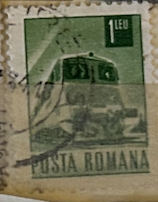
| SOURCE | TITLE| IMAGE MATCH | click to source page |
| eBay | Communication Used Romanian Stamps for sale | eBay | 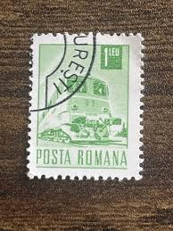 |
| eBay | Romania:1967 Transport & Communication 1 Leu 8x Stamps Block STA-7-936 | eBay | 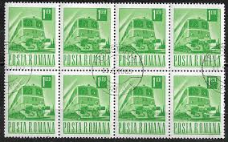 |
| PICRYL | Posta Romana. Локомотив (1) - postal stamp - PICRYL - Public Domain Media Search Engine Public Domain Search | 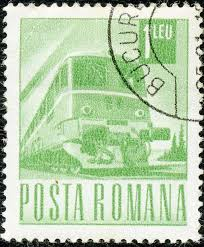 |
| YouTube | Postage stamp. POSTA ROMANA. Railway locomotive. Price 1 Leu. - YouTube | 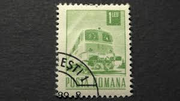 |
| Alamy | Postage stamp from Romania in the Postal and Transport series issued in 1971 Stock Photo - Alamy | 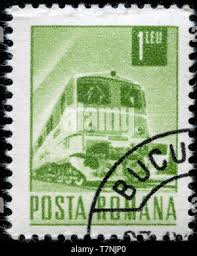 |
| HipStamp | Romania 1971 Scott 2269 used - 1 l, Diesel locomotive | Europe - Romania, General Issue Stamp / HipStamp | 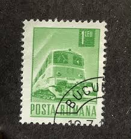 |
| Delcampe | Romania - 294972 / Romania - Bucharest - Aerial view Vue aerienne PC USED (O) Bucuresti 1974 - 1+1 Leu Electric locomotive Train | 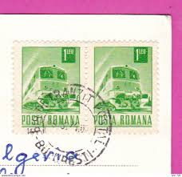 |
| HipStamp | Romania 1975 used - cto - SCV $ 0.25 | Europe - Romania, Stamp / HipStamp | 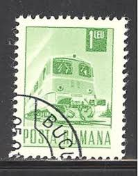 |
| eBay | Romania - 1967 Transport & Communication #5 | eBay | 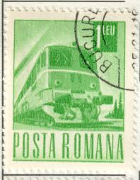 |
| Lazada Malaysia | Buy at Best Price in Malaysia | www.lazada.com.my | 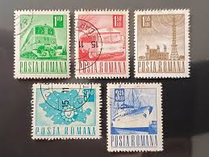 |
| Shutterstock | Locomotive Art: Over 7,710 Royalty-Free Licensable Stock Photos | Shutterstock | 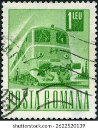 |
| Shutterstock | Vintage Train Stamp: Over 7,465 Royalty-Free Licensable Stock Photos | Shutterstock | 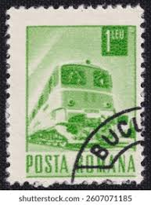 |
| PicClick UK | VINTAGE ROMANIA POSTA Romana Postage Stamp £1.16 - PicClick UK | 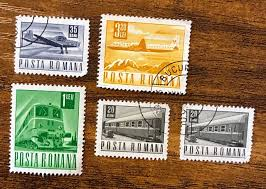 |
| Shutterstock | Romania Circa 1970 Stamp Printed Romania Stock Photo 78870307 | Shutterstock | 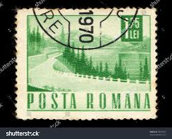 |
| eBay | Green Used Romanian Stamps for sale | eBay | 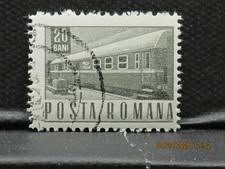 |
| HipStamp | Romania 1971 Sc#2282, SG#3855 4.80L Blue Postman CTO. | Europe - Romania, General Issue Stamp / HipStamp | 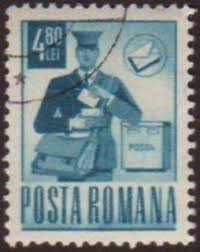 |
| eBay | Romania Stamp Posta Romana 1967 | eBay | 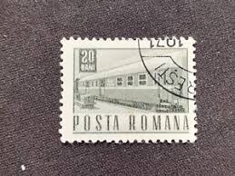 |
| stampsandstuff.net | Stamps from Romania 1960-1969 | 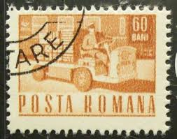 |
| eBay | Romania - 1967 Transport & Communication #30 | eBay | 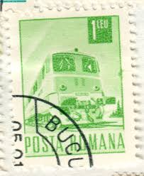 |
| Alamy | Postage stamp from Romania in the Daily life series issued in 1960 Stock Photo - Alamy | 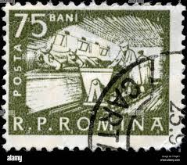 |
| eBay | Trucks Romanian Stamps for sale | eBay | 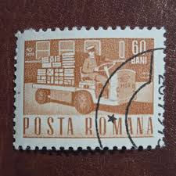 |
| Etsy | 1969 Romania Posta Romana Train Stamps – 50 Used 20 Bani Sheet – Railway Topical – Bucharest Cancel - Etsy Denmark | 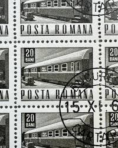 |
| iStock | Nuclear Powered Submarine Artic Sled Dogs Vintage Us Postage Stamp Stock Photo - Download Image Now - iStock | 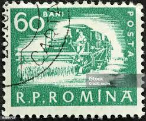 |
| HubPages | How to Organize and Display a Postage Stamp Collection - HubPages | 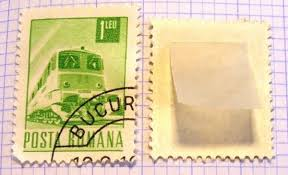 |
| eBay | Romanian Stamps Of 9 (Ref 361) | eBay | 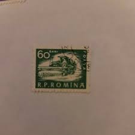 |
| HipStamp | Romania 1359: 75b Cattle shed, CTO, F-VF | Europe - Romania, General Issue Stamp / HipStamp | 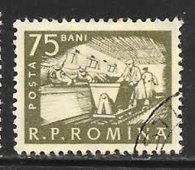 |
| eBay | Twelve Posta Romana Stamps | eBay | 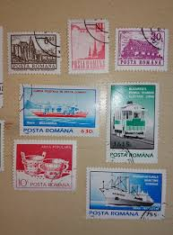 |
| HipStamp | Listings from 'ozzy1' in Europe > Romania / HipStamp | 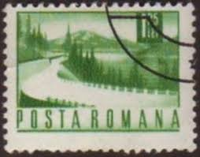 |
| Shutterstock | Greece Circa 1947 Stamp Printed Greece Stock Photo 89074252 | Shutterstock | 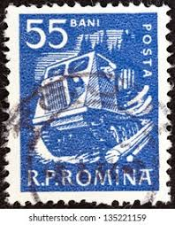 |
| Colnect | Stamp: Reforestation (Romania(Five-Year Plan 1951 to 1955) Mi:RO 1286,Sn:RO C35,Yt:RO PA57,Sg:RO 2134 📮 | 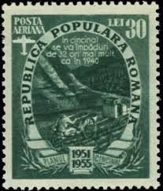 |
| eBay | Romania Insects Stamps for sale | eBay | 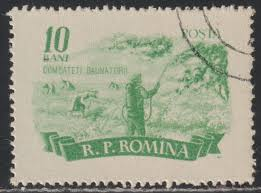 |
| Alamy | ROMANIA - CIRCA 1955: stamp printed by Romania, show Friedrich von Schiller, circa 1955 Stock Photo - Alamy | 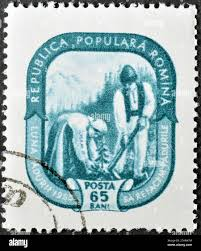 |
| Shutterstock | Posta_romana: Over 533 Royalty-Free Licensable Stock Photos | Shutterstock | 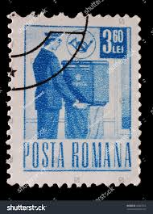 |
| eBay | Boy Scouts Postage Romanian Stamps for sale | eBay | 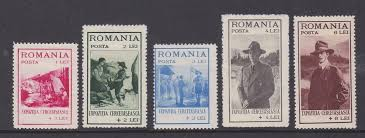 |
| UNC.UA | Philately - buy Romanian stamps and envelopes at an auction for collectors UNC.UA | 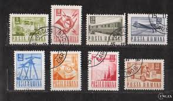 |
| HipStamp | Romania, stamp, Scott#2366, used, buildings, places on stamp, #2366 | Europe - Romania, General Issue Stamp / HipStamp | 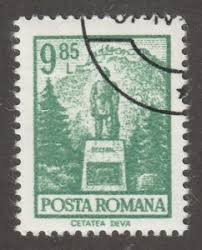 |
| mintindia.in | www.mintindia.in: www.mintindia.in:We have launched this website with primary objective to spread education about various coins of India and around the earth to help each numismatist, Introducing huge collections of the antique material | 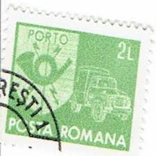 |
| eBay HK | ✔️ ROMANIA 1952 CURRENCY REFORM OVERPRINT AGRICULTURE MACHINERY SC. 866 [14.8.4] | eBay | 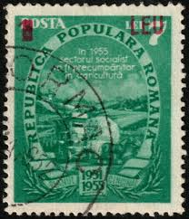 |
| Todocolección | s-8016- rumania. romania. - Buy Antique stamps of Romania on todocoleccion | 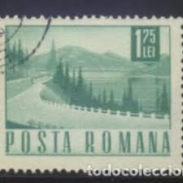 |
| eBay | 10 Romania stamps Congress General Association of Engineers, people's sport org | eBay | 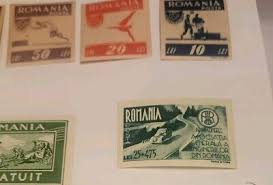 |
| Colnect | Romania : Stamps [Year: 1934] [1/2] : Colnect 📮 | 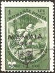 |
| eBay | Romania - 1967 Transport & Communication #21 | eBay | 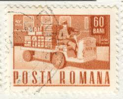 |
| PICRYL | 21 Stamps by harald meschendorfer Images: PICRYL - Public Domain Media Search Engine Public Domain Search | 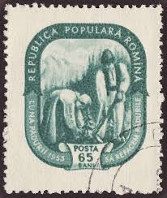 |
| Stamp Community Forum | Romania/Romana - Page 7 - Stamp Community Forum | 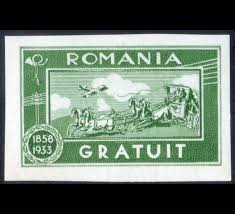 |
| Shutterstock | 6+ Thousand 1960 Stamp Royalty-Free Images, Stock Photos & Pictures | Shutterstock | 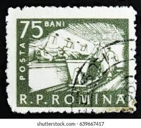 |
| Shutterstock | Tractor Stamp: Over 964 Royalty-Free Licensable Stock Photos | Shutterstock | 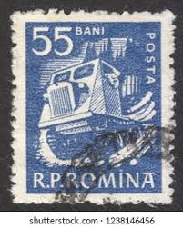 |
| eBay | Romania 1940 PRO PATRIA one stamp from souvenir sheet MH | eBay | 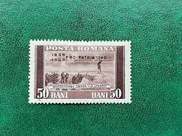 |
| Stamp Auction | Prices Realized | 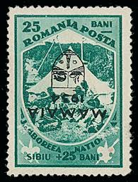 |
| Alamy | Moscow 1971 hi-res stock photography and images - Alamy | 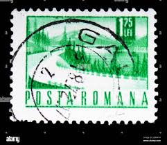 |
| Freestampcatalogue.com | Stamps with the theme Cableways - Freestampcatalogue.com - The free online stampcatalogue with over 500.000 stamps listed. | |
| Flickr | Posta Romana stamps from Romania | Check out my STAMP BLOG f… | Flickr | |
| HipStamp | Romania #1363 1.55L Loading Ship | Europe - Romania, General Issue Stamp / HipStamp | |
| Blogger.com | Heritage of India stamps site: Romania stamps collection Year 1960 issue | |
| eBay | Romania stamps 1968 | eBay | |
| allnumis.com | 60 Bani - Parcel electric truck, 1968 - Romania - Stamp - 3246 | |
| lastdodo.com | Vermilion Stamp catalogue - LastDodo | |
| Shutterstock | Singapore December 8 2019 Stamp Printed Stock Photo 1582418521 | Shutterstock | |
| Dreamstime.com | Romania Harvester Stock Photos - Free & Royalty-Free Stock Photos from Dreamstime | |
| Alamy | Republica Populara Romana stamp. Republica Populara Romana historical stamp. Republica Populara Romana stamp collection Stock Photo - Alamy | |
| PicClick | Posta Romana Stamps FOR SALE! - PicClick |